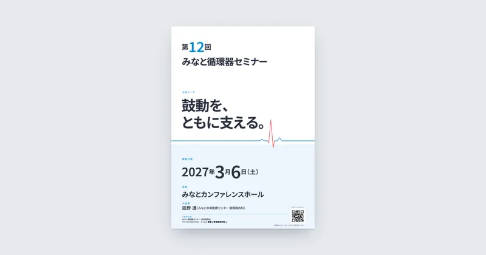
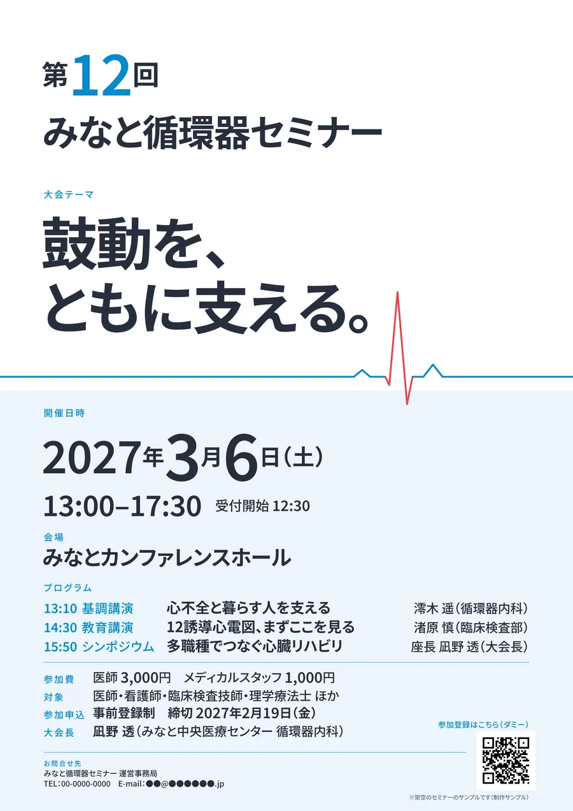
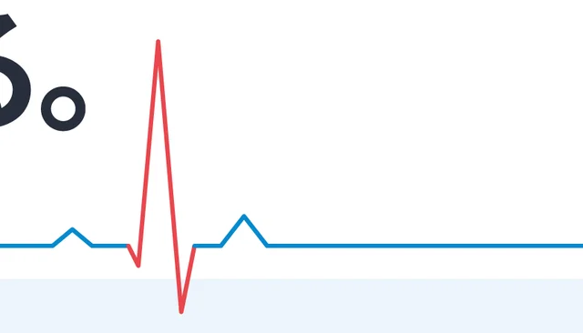
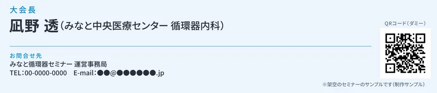

制作の解説｜ポスター・医療・学会
医療セミナーのポスター（A2）
掲示の前を通りすぎる人にも、
「何の会が・いつ」が伝わるように。

※練習として制作した、架空のセミナーのサンプルです。会の名前・日時・会場・人名はすべて架空で、QRコードは読み取れないダミーです。
Concept
課題と、制作の意図
- 課題学会やセミナーのポスターは載せる情報が多く、遠くからだと「何の会が・いつ・どこで」が読み取りにくい
- 誰に院内や会場の掲示の前を通る、医師・メディカルスタッフ
- 伝えたいこと立ち止まらなくても、会の名前と日付がわかること。近づけば、時刻・プログラム・参加費・申込方法までその場でわかること
- コンセプト「鼓動に寄り添う、一本の線」。紙面を横切る心電図の線1本で、循環器の会であることとテーマを見せる
Thinking
考えたこと
-
写真を使わず、文字を主役に
病院や人物の写真を使うと、それだけで印象が決まってしまいます。告知でいちばん大事な会の名前・テーマ・日付・会場を、大きな文字と数字で組みました。
-
飾りは、題材から作った線1本だけ
心電図の波形（P・QRS・T）を、紙面の左端から右端まで1本で通しました。線は紙の端まで伸ばし、波の上下は白と淡い青の境目をまたぐようにして、上の段と下の段をつないでいます。
-
色は白・青・赤の3色
白と澄んだ青で、明るく清潔な印象に。赤は「警告」にも見える色なので、心電図の1拍（QRS）だけに使いました。文字は真っ黒ではなく、青みのある墨にしています。
-
遠くから・近づいて・手元で、の3段に
上の白い面に会の名前とテーマ（遠くから見る所）、下の淡い青の面に日時・会場・プログラム・参加費・申込（近づいて読む所）、いちばん下にQRコードとお問合せ先（手元で読む所）をまとめました。読む順番と、面の分かれ目、文字の大きさの段をそろえています。
Poster
ポスターで工夫したこと
A2の縦長・片面です。


赤は、1拍だけ線のほとんどは青で、心電図の1拍（QRS）だけを赤にしました。離れて見ても、目に入りやすいようにしています。

参加に要る情報は、下にまとめるプログラム・参加費・対象・申込方法と締切を下の段に集め、QRコードには行き先（参加登録）を添えました。読む距離に合わせて文字の大きさを段に分け、一番小さい文字も12ptより小さくしていません。
Check
確認したこと
- 印刷用データCMYK・塗り足し3mm・トンボ付きのPDFで、仕上がりサイズ（420×594mm）と塗り足しの範囲が正しいことを確認しました。入稿用の .ai は文字をアウトライン化しています。
- 文字の位置と大きさすべての文字が、断裁でずれても切れない範囲（仕上がりの3mm内側）に入っていることを確認しました。
- 架空の名前と日付会の名前・会場・人名（講師を含む）・病院名を検索し、同じ名前が出てこないことを確認しました。開催日と申込の締切の曜日は、暦で確かめています。
- 根拠が要る言葉を使わない「最先端」「日本一」などは使わず、テーマは短い言い切りだけにしています。
Contact
ポスターやチラシの
ご相談はこちら
「まだ何も決まっていない」段階でも、
大丈夫です。
ご相談・お見積りは無料です。